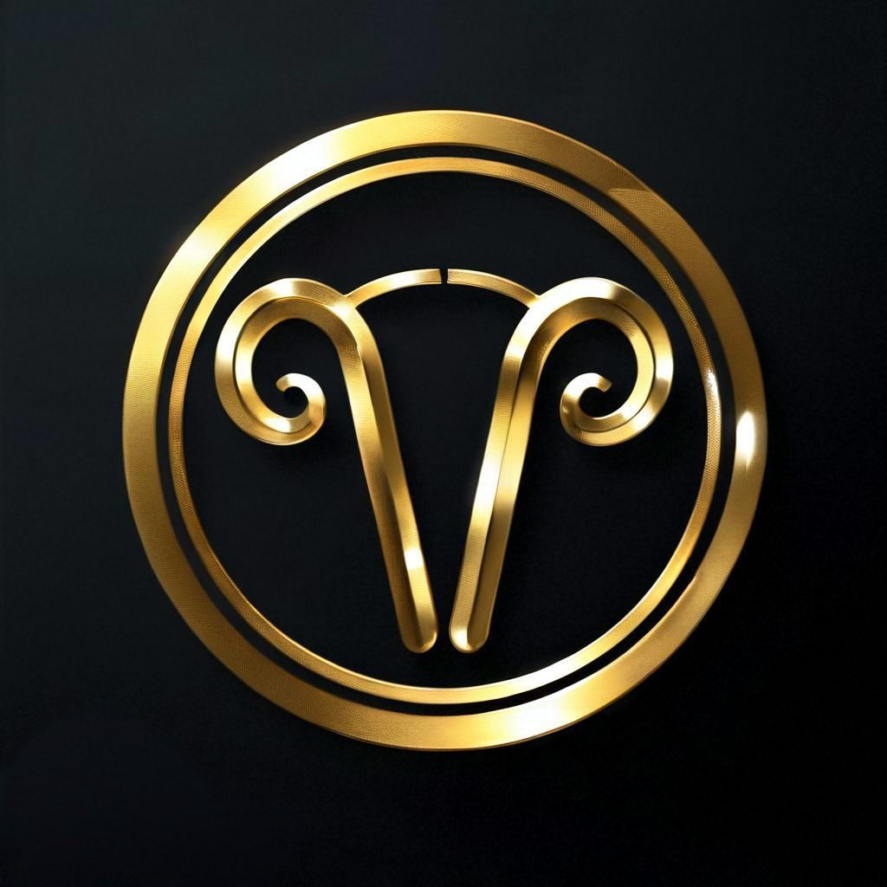
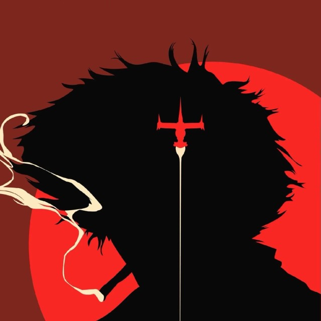
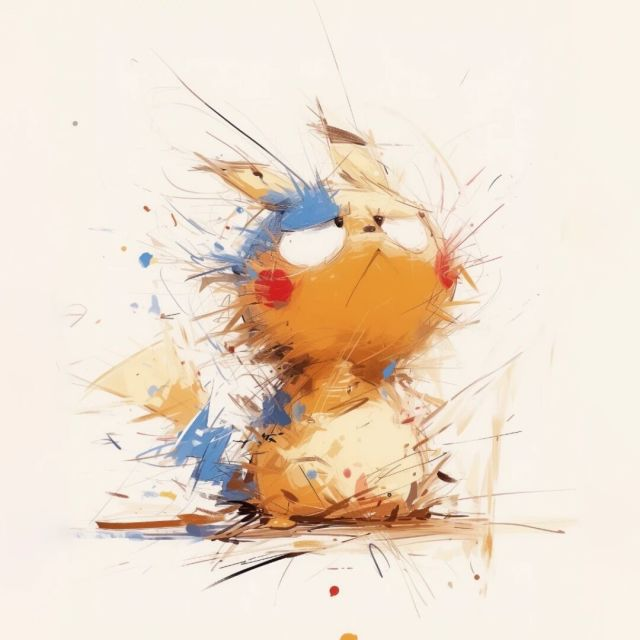

Golden Fleece
金羊毛骑士团
欢迎来到EVE Online中最传奇的军团之一。我们致力于探索未知星域，征服挑战性的内容，并建立坚不可摧的兄弟情谊。
金羊毛骑士团
CNGFF / FLEET ATTENDANCE
每一次集结，都有记录。
从角色出勤到玩家贡献，在军团工作台统一整理 PAP、活动时长和奖励发放。支持 dscan 名单导入、角色归组与手动补录。
北京时间每日 PAP半小时计时奖励玩家奖励封顶出勤与发放编号
点击后在新标签页打开出勤工作台，沿用现有在线版的账本。数据保存在使用工具的浏览器中，不同设备不会自动同步，请定期导出完整备份。
军团历史
金羊毛骑士团成立于CCP宇宙的动荡时期，由一群志同道合的探险者和战士创立。我们从一个小小的海盗团伙起步，凭借着勇气、智慧和对胜利的渴望，逐步扩张势力范围。历经无数次星际战争和政治博弈，我们已成为银河系中一股不可忽视的力量。我们的旗帜飘扬在最危险的0.0星域，我们的传说在每一个飞行员的口中流传。
成员介绍
十六鸡
Sakura ly
军团现任CEO，军团制造大佬。
咸鱼王
xyb-bob
军团创始人，太上皇。

小孩
XiaoHai EB
军团反收割FC，战斗狂热人员，solo大佬。
混沌
mxy-xiaohao
军团矿头。
小染
Ran 0
网页制作人员。

萝卜
Adolf KWeismann
军团吉祥物，有钱的大佬
军团福利
加入金羊毛骑士团，你将享受到以下福利：
- 1.入团后发放基础技能书和脑插
- 2.入团完成seat登记后发放登记奖励（免费号1e，付费号2E）
- 3.入团完成相关教程后免费发放打捞牵引船及mtu
- 4.入团后刷怪狂怒无限续杯
- 5.入团一周后发放基础战斗船只
- 6.军团固定10%，没有黑煤窑的后顾之忧
- 7.提供内部价常规及旗舰
- 8.提供军团PVP补损更有联盟srp，一次战斗2份补损，直接战斗爽
- 9.每周定期开展收割或其他娱乐活动
军团生产
军团驻地位处非塔南部，驻地天使怪，隔壁萨沙怪，大量高安等星系可供生产。蜜蜂境内全境异常共享，随意生产，再也不用担心生产人挤人。
团内炸鱼电鱼队数量充足，炸鱼队打捞点有共享文件夹，新人打捞3天出月卡直接脑浆、月卡自由（已有两批5+新人毕业开工掠夺）。每周开组收割，抢Boss，偷巢穴以及其他娱乐活动。战斗时多角度录制视频，剪辑高光时刻发布，今天你就是主角。出勤尽力即可，没有强制性的超高要求。
团内关系融洽，没有小团体，让你感受到家一样的氛围。老登玩家知识渊博，想要什么样的发展方向都能得到支持。无论你是喜欢PVE还是PVP，喜欢生产还是战斗，这里都有适合你的活动和伙伴。加入我们，一起在EVE的宇宙中创造属于我们的传奇吧！